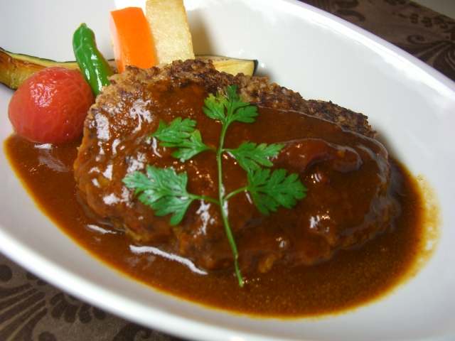

ハンバーグ

材料 2～3人分
- 合びき肉
- 250〜300g
- 玉ねぎ
- 1個
- A パン粉
- 大さじ4
- A 牛乳
- 大さじ4
- A すりおろしにんにく
- 1/2片
- A 塩
- 小さじ1/2
- A 砂糖
- 小さじ1/2
- A 胡椒
- 少々
- B ケチャップ
- 大さじ3
- B ウスターソース
- 大さじ1と1/2
- B 醤油
- 大さじ1
作り方
1
玉ねぎをみじん切りにし、フライパンで強めの中火で熱します。
色が軽くついてきたら弱めの中火にし、8～9分ほどじっくり炒めて甘みを出します。
きつね色になればOKです。
2
粗熱がとれた1とひき肉をボウルに入れ、練り混ぜます。
タネを楕円形に軽くまとめ、表面をならして形を整え、片手から片手へ軽く投げるようにして空気を抜きます。
最後に、中央部分を軽く押したら成形は完了です。
3
フライパンに薄く油をひいて、中火にかけて熱くなったらハンバーグをそっと並べ入れます。
火加減は弱火を少し強くしたくらいにして2〜3分ほど焼きます。
4
2〜3分焼いてこんがりと片面に焼き色がつけば裏返します。
すべてを裏返したら弱火にして、蓋をして7〜9分ほどじっくり蒸し焼きにします。
竹串を刺して、竹串を抜いた部分から透明な肉汁が出てくれば火が通っている証拠です。
5
4で使ったフライパンにBをすべて入れて煮詰めます。
4を器に盛り、5のソースをかければ完成です。